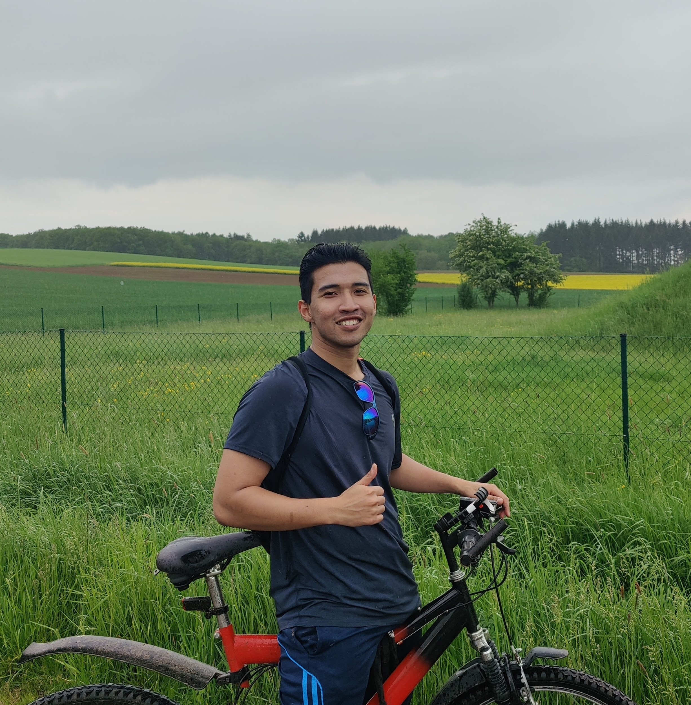

Hello, I'm
Mohamad Afif Irfan
```Mechatronics Engineer | Systems Integration Engineer | Software & Automation Enthusiast
Hello, I'm
Mechatronics Engineer | Systems Integration Engineer | Software & Automation Enthusiast
Get To Know More

I am a Mechatronics Engineer with professional experience in naval defense systems, automation, software validation, and technical project execution. Currently, I serve as a Technical Executive within the Combat System Centric Department at Lumut Naval Shipyard, supporting the installation, integration, testing, and commissioning of advanced radar, sonar, and fire control systems for the Malaysian Littoral Combat Ship programme. Previously, I worked with PETRONAS on offshore project delivery and completed an R&D internship at STIHL Germany, where I developed automation scripts, software validation tools, and GUI applications using Python, MATLAB, and C. My interests include software development, automation, robotics, embedded systems, and artificial intelligence, particularly where software and engineering intersect to solve complex real-world problems.
Academic Background
Technical University of Applied Sciences Würzburg-Schweinfurt, Germany
2018 – 2023
Specialisation: Automation & Robotics, Human-Machine Interaction
Thesis: Virtual Commissioning of a Linear Axis Machine
Final Grade: 1.7 (Equivalent to First Class Honours)
University of Mannheim, Germany
2018
DSH-2 (Equivalent to C1 Level)
Professional Journey
Lumut Naval Shipyard, Malaysia
Jul 2024 – Present
PETRONAS, Malaysia
Nov 2023 – Jun 2024
STIHL AG & Co. KG, Germany
Apr 2022 – Sep 2022
Featured Work
Developed a GUI application for 2D garden planning and area calculations with drag-and-drop functionality.
Developed a graphical application for automated visualization and analysis of robotic validation data.
Built a virtual commissioning environment using Siemens NX MCD, CtrlX CORE and Node-RED to validate machine behaviour prior to deployment.
Technical Expertise
Python • C • C++ • JavaScript • HTML • CSS
MATLAB • Simulink • Siemens S7 PLC • LabVIEW • Node-RED • CtrlX CORE • PROVETech:TA • CANape
Siemens NX MCD • PTC Creo • WinFACT Boris • Microsoft Office
Malay (Native) • English (Professional) • German (Intermediate / DSH-2)